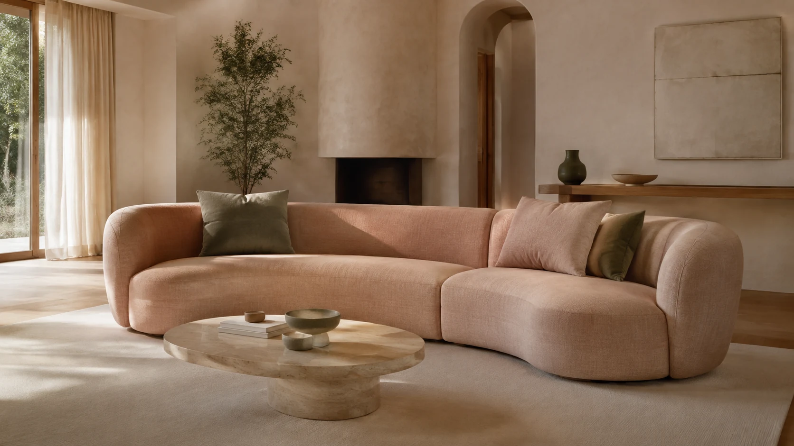

Vegyszermentes
kárpittisztítás
PRÉMIUM minősítésű kárpittisztítási szolgáltatások magánszemélyeknek és vállalatoknak egyaránt. Kanapé, fotel, szék & matractisztítás + atkairtás!

Vegyszermentes tisztítás & kárpittisztítás megoldások
Professzionális tisztítás magánszemélyeknek és vállalatoknak Győr, Mosonmagyaróvár, Komárom, Tata, Tatabánya, Veszprém, Balaton, Pápa, Szombathely és Sopron környékén egyaránt.

Kárpittisztítás
Kanapék, fotelek, autókárpitok, irodai székek tisztítása.
Matractisztítás
Otthoni és szálláshelyi matracok tisztítása, atkaírtás.
Ipari szőnyegtisztítás
Irodák, irodaházak, hotelek szőnyegpadlói, nagy felületek.
Ipari takarítás
Irodák, irodaházak, üzemek, gyárak komplex takarítása.
Ablak és kirakat
Üzletkirakatok, üveghomlokzatok , irodaházak, bevásárlóközpontok.
Mindenhol ott vagyunk Észak-Nyugat Magyarországon!
Minden városban azonos kiszállási díjak:
belváros 3 500 Ft
· külváros 4
000
Ft
· 10 km-ig 4 500 Ft
· 20 km-ig 5 500 Ft
Balaton észak
Balaton dél
Balaton nyugat
3 egyszerű lépésben megoldjuk
Csak dőlj hátra - a többit mi intézzük.
Konzultáció
Telefonon egyeztetjük a részleteket: a tisztítandó bútorok típusa, mérete, anyaga, az esetleges foltok jellege. Így pontosan tudjuk, milyen kezelésre van szükség és reális árajánlatot adunk.
- Bútorok száma és típusa
- Anyag és állapot felmérés
- Foltok, szennyeződések jellege
- Időpont egyeztetés
Előkészületek
Az érkezésünk előtt néhány egyszerű teendő, hogy a munka gördülékenyen menjen. Ezeket te is könnyen elvégezheted pár perc alatt.
- Tisztítandó felületek szabaddá tétele
- Akadályozó tárgyak eltávolítása
- Vízre érzékeny elemek levétele
- Háziállatok biztonságos elhelyezése
Élvezd a tisztaságot
Kényelmesen dőlj hátra, amíg szakembereink elvégzik a munkát. Vegyszermentes technológiánkkal alapos, biztonságos és környezetbarát tisztítást biztosítunk.
- Profi berendezések és technika
- 100% vegyszermentes eljárás
- Gyors száradás, azonnali használat
- Garancia az eredményre
Professzionális kárpittisztítás: a különbség, amit látni kell
Egy háztartási porszívó a szennyeződések töredékét sem éri el. Az ECO Clean ipari extrakciós technológiája a kárpit legmélyebb rétegeibe hatol — a szövet belsejéből szívja ki a foltokat, poratkákat és allergéneket. Az eredmény? Olyan bútor, amit nem csak lát, hanem érez is.
Amikor a nappali kanapé új életet kap...
Az otthon szíve a kanapé — rajta pihenünk, rajta játszanak a gyerekek, rajta heverészik a kutya. Évek alatt milliónyi poratka, baktérium, izzadság és folt halmozódik fel a szövet mélyén, amit szabad szemmel nem is lát.
Egy ügyfelünk így fogalmazott: "Nem gondoltam volna, hogy a 10 éves kanapénk ilyen állapotban van belülről. A kárpittisztítás után olyan, mintha új bútort kaptunk volna — az illata is teljesen megváltozott."
Az ECO Clean vegyszermentes ipari extrakciós technológiája 99,9%-ban eltávolítja a szennyeződéseket, poratkákat és allergéneket a kárpit legmélyebb rétegeiből is. A bútor 4-6 óra alatt szárad, és semmilyen vegyszert nem hagyunk hátra.
A kárpittisztítás nem luxus — az egészséges otthon alapja. Különösen fontos allergiásoknak, kisgyermekes családoknak és háziállat-tulajdonosoknak.
Az ECO Clean az intelligens választás: vegyszermentes, gyerekbiztos, és az eredmény magáért beszél. Ne kockáztass bérelt géppel — bízd profikra!

 Előtte
Utána
Előtte
Utána
Egy átlagos kanapéban akár 2 millió poratka is élhet, amelyek ürüléke az egyik leggyakoribb beltéri allergén. Professzionális kárpittisztításunkkal és atkaírtásunkkal védjük családod egészségét — 100% vegyszermentes technológiával.
Poratkák: a legnagyobb beltéri allergénforrás Magyarországon
A magyar háztartások 85%-ában kimutatható mennyiségű poratka él a kárpitozott bútorokon. Ürülékük mikroszkopikus méretű, a levegőbe kerülve pedig tüsszögést, orrfolyást, szemviszketést és asztmás rohamokat okoz. A rendszeres kárpittisztítás a leghatékonyabb módja az atka-allergének csökkentésének — a szövet legmélyebb rétegeiből is eltávolítjuk az atkákat, petéiket és ürülékeiket.
Kisgyermekes családok számára: vegyszermentes kárpittisztítás
A csecsemők és kisgyermekek immunrendszere még fejlődőben van — különösen érzékenyek a beltéri allergénekre és a vegyi anyagokra. A babák a kanapén csúsznak-másznak, a kárpitot szopogatják, az arcukat a párnába nyomják. Az ECO Clean kárpittisztítás 100% vegyszermentes: sem klórt, sem ammóniát, sem illatanyagot nem használunk. A tisztítás után a bútor atkamentes, baktériummentes és teljesen biztonságos a legkisebbek számára is.
Háziállattal élők: szőr, hám és atkák együttes kezelése
A kutyák és macskák szőre, hámlott bőre és nyála újabb allergénréteget jelent a kárpitozásban — a poratkák pedig pont ezeket fogyasztják. Az állatszőr és az atkák együttes jelenléte a bútorokon megsokszorozza az allergiás terhelést. Professzionális kárpittisztításunk egyszerre távolítja el az állatszőrt, a hámsejtek maradványait és a poratkákat — így a háziállat és a család is egészségesebb környezetben élhet.
Irodák, szálláshelyek és közösségi terek bútorhigiéniája
A napi 8 órát használt irodai forgószékek, tárgyalótermi bútorok és szállodai kanapék valóságos atkatelepek. A vendéglátóhelyek, rendelők és oktatási intézmények kárpitozott bútorait naponta több tucat ember használja. A rendszeres professzionális kárpittisztítás és atkaírtás itt nem luxus, hanem közegészségügyi szükséglet. Szolgáltatásaink után kérésre tanúsítványt adunk az atkaírtás eredményéről.
Fűtési szezon és évszakváltás: a kritikus időszakok
Az őszi-téli fűtési szezon Magyarországon különösen veszélyes az allergiásoknak: a zárt ablakok, a központi fűtés és a meleg, száraz levegő felkavarja az atkaporát és koncentrálja a beltéri allergéneket. Tavasszal a pollenek és a poratkák együttes jelenléte súlyosbítja a panaszokat. Évszakváltáskor végzett kárpittisztítással — ideálisan fűtési szezon előtt és tavasszal — megelőzheti a tünetek súlyosbodását és egész évben egészségesebb otthont biztosíthat.
Amit ügyfeleink mondanak rólunk
Nem vagy biztos benne,
hogy ANDANTE NovaLife
a kárpit?
Mutass egy közeli fotót, és megpróbáljuk felismerni az ANDANTE NovaLife-ra vagy hasonló bevonatra utaló jeleket, miközben az anyag jellegéről is támpontot adunk. Ha a képből nem dönthető el, a kezelési címke vagy egy újabb részletfotó segíthet.

A fotó előzetes kockázatszűréshez ad támpontot. Az ANDANTE NovaLife hiányát, a szálösszetételt és a tisztíthatóságot önmagában nem igazolja.
Egy közeli fotó segíthet.
Fotózd a kárpitot 10–20 cm-ről, természetes fényben, vagy válaszd a bútor kezelési címkéjét.
Válassz egy közeli fotót.
Húzd ide a képet, vagy válassz a fotóid közül.
Az anyagreferencia-gyűjtemény elérhetőségét ellenőrizzük.
Válassz egy fotót a kezdéshez.
Mi történik a feltöltött képpel?
A kép kiválasztásakor csak helyi előnézet készül. Az „Elemzés indítása” gombbal a kicsinyített fotót és megjegyzést az ECO Clean kiszolgálóján keresztül külső képfeldolgozó szolgáltatáshoz küldöd, fotóalapú anyagbecsléshez. Ha külön hozzájárulsz, az ECO Clean az előkészített JPEG-fotót privát felhőtárhelyen is megőrzi, és saját számítógépére szinkronizálhatja, kézi szakmai ellenőrzéshez és besoroláshoz. Szakmai jóváhagyás után a fotót későbbi elemzéseknél összehasonlítási mintaként külső képfeldolgozó szolgáltatásnak is átadhatja. Hozzájárulás nélkül nem kerül fotó a referenciagyűjteménybe. A fotókat nem tesszük nyilvánosan közzé. A fotón lehetőleg csak a szövet vagy a kezelési címke szerepeljen.
Online foglalás
Konfiguráld szolgáltatásodat és foglalj időpontot pár kattintással!
Ár-konfigurátor
● Online foglalásVálassz szolgáltatást a kezdéshez...
Kérj árajánlatot
Magánszemélyeknek és vállalatoknak egyaránt. Hívj vagy írj!